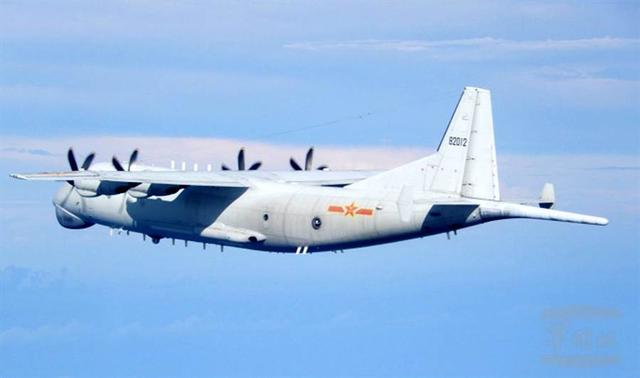

连续10天！解放军军机进入台湾西南空域，高度仅2000米
解放军军机今天一早9时20分再次进入台湾西南空域，高度在2000米左右。据悉，这是解放军军机连续第十天进入此一空域。台媒宣称，台军广播内容则维持常态性的喊话，“位于台湾西南空域高度2000米的大陆军机注意！你已进入我空域，影响我飞航安全，立即回转脱离。”台军方还老调重弹表示，大陆军方已遭驱离，并称请台湾民众放心。
对于解放军军机近日接连在台湾附近空域进行演习，国防部新闻局副局长、国防部新闻发言人谭克非9月24日在例行记者会上表示，台湾是中国不可分割的一部分。解放军在台海地区组织实兵演练，展现的是捍卫国家主权和领土完整的决心和能力，针对的是外部势力干涉和极少数“台独”分裂分子及其分裂活动。台民进党当局置广大台湾同胞的安危福祉于不顾，不断挑动两岸对立对抗，进行“谋独”挑衅，危害台海和平稳定，这一图谋注定不会得逞。如果“台独”分裂势力胆敢以任何名义、任何方式把台湾从中国分裂出去，我们必将不惜一切代价，坚决予以挫败。 综合台湾媒体报道